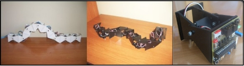
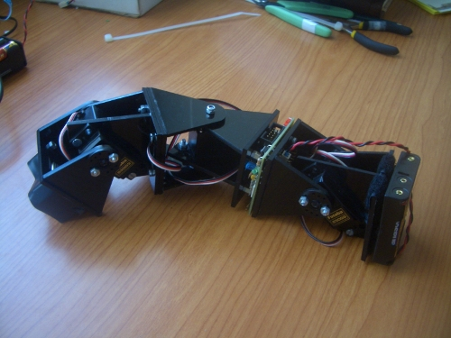

El viernes 27 de Noviembre di una charla sobre Robots modulares en el Dorkbot Madrid, invitado por Javier Candeira y Juan Carlos Alonso (Muchas gracias 😉 )
Las transparencias y los vídeos que mostré están disponibles en esta página. Aquí os dejo las transparencias para verlas directamente:
link not available!
En esta ocasión ha habido bastantes novedades con respecto a las últimas charlas. La principal ha sido la demostración en vivo del robot Minicube-II moviéndose de manera autónoma usando la tarjeta Skycube. Es la primera vez que se muestra, ya que lo terminé la semana pasada :-). Los detalles los contaré en otra entrada del blog, pero de momento os dejo una foto de la criatura:
